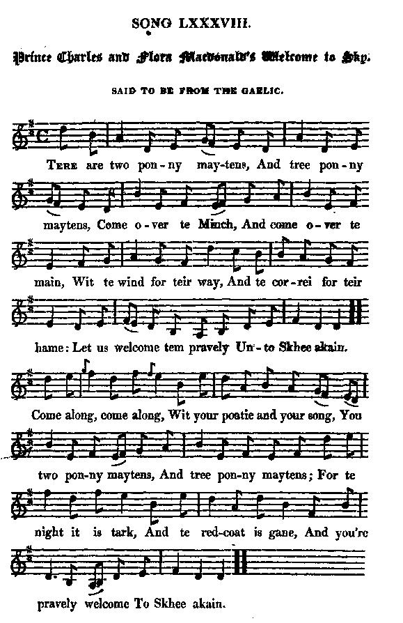

Twa Bonnie Maidens
Deux jolies filles
Prince Charles and Flora McDonald's Welcome to Skye
Lyrics from Hogg's "Jacobite Relics" 2nd Series N°88, page 172, published in 1821.Tune - Mélodie
March "Planxty George Brabazon" by Turlough O'Carolan (1670 - 1738)
Sequenced by Christian Souchon

Version published in Hogg's 'Jacobite Relics' in 1821
|
To the tune: PLANXTY. A term used by Turlough O'Carolan (1670-1738), the last of the great itinerant Irish harper-composers, “Planxty” is a word that Carolan prefixed to the surname of a lively melody for one of his patrons. Although its exact meaning is of some debate it appears to some to be a form of salute. Carolan actually used the word seldom, and it was later publishers who applied the term to his tunes. The title planxty appears twice in Neals' Collection of the Most Celebrated Irish Tunes (Dublin 1724, spelled "Planksty"). PLANXTY GEORGE BRABAZON. Irish air composed by Turlough O'Carolan (1670-1738) for George Brabazon of New Park (later Brabazon Park, County Mayo). Donal O’Sullivan (1958), who included this piece in his definitive work on Carolan, noted there was no definitive evidence for its being composed by the harper. He says Brabazon must have been a young man and a bachelor when O’Carolan composed the air, while the harper himself was near the end of his career. George Brabazon married Sarah, daughter of Dominick Bourke of Clorough, County Galway, and died in March, 1780. PRINCE CHARLES AND FLORA McDONALD'S WELCOME TO SKYE: “George Brabazon” was retitled in Scotland "Prince Charlie's Welcome to the Island of Skye" in honor of the Pretender as the vehicle for the song “Twa Bonnie Maidens.” It also appears in the Gow’s Complete Repository, Part Second (1802) under the title “Isle of Sky” (sic), set as a Scots Measure and with some melodic differences in the second part. This is significant, for it predates the earliest Irish source (O’Neill) by a century. Source "The Fiddler's Companion" (cf. Liens). |
A propos de la mélodie: PLANXTY. Terme utilisé par Turlough O'Carolan (1670-1738), le dernier des grands harpistes-compositeurs irlandais itinérants, "Planxty" est un mot dont Carolan faisait précéder le nom d'un mécène à qui il dédiait une mélodie entrainante. Bien que la signification exacte de ce terme soit controversée il semble qu'il s'agisse d'une forme de salut. En fait, Carolan utilisa le mot rarement et ce sont les éditeurs de musique qui, par la suite, appliquèrent ce mot à ses mélodies. Le titre "planxty" apparaît deux fois dans le "Recueil des airs irlandais les plus célèbres" de Neal (Dublin 1724, ortographié "Planxty"). PLANXTY GEORGE BRABAZON. Air irlandais composé par Turlough O' Carolan (1670- 1738) en l'honneur de Georges Brabazon de New Park ( qui deviendra Brabazon Park, dans le comté de Mayo). Donald O'Sullivan (1958) qui introduisit ce morceau dans ses "oeuvres complètes de Carolan", notait qu'on n'avait pas la preuve absolue, qu'il ait été composé par le harpiste. Il dit que Brabazon doit avoir été un tout jeune homme, célibataire, quand O'Carolan est supposé avoir écrit cette pièce, sa carrière touchant à sa fin. George Brabazon épousa Sarah, fille de Dominique Bourke de Clorough, comté de Galoway et mourut en mars 1780. BIENVENUE A SKYE AU PRINCE CHARLES ET A FLORA: "George Brabazon" fut rebaptisé en Ecosse "Bienvenue au Prince Charles dans l'Île de Skye", en l'honneur du prétendant et servit à accompagner la chanson "Deux jolies filles". La mélodie apparaît dans le Répertoire Complet, 2ème partie (1802) de Gow sous le titre "Île de Sky" (sic), sous forme de "Scots Measure", avec quelques différences mineures dansla seconde partie. On notera que cette publication précède d'un siècle la plus ancienne source imprimée irlandaise, à savoir O'Neil. Source "The Fiddler's Companion" (cf. Liens). |
|
To the lyrics: Hogg explains as follows the mention "Said to be from the Gaelic" affixed to the title of the song: "Was copied verbatim from the mouth of Mrs Betty Cameron from Lochaber ; a well-known character over a great part of the Lowlands, especially for her great store of Jacobite songs, and her attachment to Prince Charles, and the chiefs that suffered for him, of whom she never spoke without bursting out a-crying. She said it was from the Gaelic ; but if it is, I think it is likely to have been translated by herself. There is scarcely any song or air that I love better." Hogg's "Jacobite Relics", Volume 2. This Mrs Betty Cameron was evidently originating from the Highland, judging by the weird English ascribed to her, which is the usual way Hogg renders the English of Gaelic speakers. See for instance: - Whigs from Bothwell Bridge", 2nd Song: "The turnimpike". - "Turn the Blue bonnet who can, 4th verse. - "Lilliburlero". To disguise oneself as a woman was a customary trickery that enabled, among others, - Lord Balfour of Burleigh, - James Ogilvy and - William Maxwell, Earl of Nithsdale to escape from execution. The famous Chevalier d'Eon, who came from France to England in 1763 and fooled the world for nearly half a century into thinking that he was a woman, made no attempt to "disguise" as a man to escape from prison in 1804 (but in 1810 the 82 year old "lady" was buried in ... Middlesex!) |
A propos du texte: Hogg explique en quoi ce chant est "prétendument traduit du Gaélique": "Ce chant a été noté tel qu'il a été interprété par Mme Betty Cameron de Lochaber. C'était une figure fameusedans une grande partie des Lowlands, en particulier pour le nombre de chants Jacobites à son répertoire et pour son attachement au Prince Charles et aux chefs punis pour l'avoir soutenu, dont elle ne parlait jamais que les larmes aux yeux. Elle le disait traduit du Gaélique: Je pense, en réalité, qu'elle l'avait traduit elle-même. Il est peu de mélodies qui me plaisent d'avantage. Hogg's "Jacobite Relics", Volume 2. Cette Mme Betty Cameron était bien évidemment originaire des Highlands, à en juger par le curieux anglais qu'on lui attribue. C'est de cette façon que Hogg transcrit l'anglais des celtophones. Cf. par exemple: - Whigs de Bothwell Bridge", 2ème chant: "The turnimpike". - "Touche au bonnet bleu qui l'ose, 4ème couplet. - "Lilliburlero". Se déguiser en femme était une ruse fort répandue qui permit, entre autres, à: - Lord Balfour of Burleigh, - James Ogilvy et à - William Maxwell, Comte de Nithsdale d'échapper à l'exécution. Le fameux Chevalier d'Eon, qui arriva en Angleterre en 1763 et parvint à faire croire au monde entier qu'il était une femme pendant près d'un demi-siècle, n'essaya pas de se "déguiser" en homme lorsqu'il fut emprisonné en 1804 (mais en 1810, cette vieille "dame" de 82 ans fut enterrée dans le ... Middlesex!) |

|
PRINCE CHARLES AND FLORA McDONALD's WELCOME TO SKYE Said to be from the Gaelic. 1. Tere are two ponny maytens, And tree ponny maytens Come over te Minch, And come over te main, Wit te wind for teir way, And te correi for teir hame: Let us welcome tem pravely Unto Shee akain. Come along, come along, Wit your poatie and your song, You two ponny maytens, And tree ponny maytens; For te night it is tark, And te redcoat is gane, And you're pravely welcome To Skhee akain. 2. Tere is Flora, my honey, So tear and so ponny, And one tat is tall, And comely witall; Put te one as my khing, And te oter as my quhain, Tey're welcome unto Te Isle of Skhee akain. Come along, come along, Wit your poatie and your song, You two ponny maytens, And tree ponny maytens; For te lady of Macoulain She lieth her lane, And you're pravely welcome To Skhee akain. 3. Her arm it is strang, And her petticoat is lang, My one ponny maytens, And two ponny maytens; Put teir ped shall pe clain, On te heather most crain, And tey're welcome unto Te Isle of Skhee akain. Come along, come along, Wit your poatie and your song, You one ponny mayten, And you two bonny mayten. Py te sea-moullit's nest I will watch o'er te mhain; And you're tearly welcome To Skhee akain. 4. Tere's a wind on te tree, And a ship on te sea, My two ponny maytens, And tree ponny maytens: On te lee of te rock; Shall your cradle pe rock; And you're welcome unto Te Isle of Skhee akain. Come along, come along, Wit your poatie and your song, My two ponny maytens, And tree ponny maytens: More sound you shall sleep, When you rock on te deep; And you's aye pe welcome To Skhee akain. Source: "The Jacobite Relics of Scotland, being the Songs, Airs and Legends of the Adherents to the House of Stuart" collected by James Hogg, published in Edinburgh by William Blackwood in 1819. |
PRINCE CHARLES AND FLORA McDONALD's WELCOME TO SKYE Transcription of column 1. 1. There are twa bonnie maidens, and three bonnie maidens, Cam' owre the Minch, and cam' owre the main, Wi' the wind for their way and the corry for their hame, And they're dearly welcome to Skye again. Come alang, come alang, wi' your boatie and your song, My ain bonnie maidens, my twa bonnie maids! For the nicht, it is dark, and the redcoat is gane, And ye are dearly welcome to Skye again. 2. There is Flora, my honey, sae dear and sae bonnie, And ane that's sae tall, and handsome withal. Put the ane for my king and the other for my queen And they're dearly welcome to Skye again. Come alang, come alang, wi' your boatie and your song, My ain bonnie maidens, my twa bonnie maids! For the Lady Macoulain she dwelleth in her lane, And she'll welcome you dearly to Skye again. 3. Her arm it is strong, and her petticoat is long, My ain bonnie maidens, my twa bonnie maidens, The sea moullit's nest I will watch o'er the main, And ye are bravely welcome to Skye again. Come alang, come alang, wi' your boatie and your song, My ain bonnie maidens, my twa bonnie maids! And saft sall ye rest where the heather it grows best. And ye are dearly welcome to Skye again. 4. There's a wind on the tree, and a ship on the sea, My ain bonnie maidens, my twa bonnie maids! Your cradle I'll rock on the lea of the rock, And ye'll aye be welcome to Skye again. Come alang, come alang, wi' your boatie and your song, My ain bonnie maidens, my twa bonnie maids! Mair sound sall ye sleep as ye rock o'er the deep, And ye'll aye be welcome to Skye again. |
BIENVENUE A SKYE AU PRINCE CHARLES ET A FLORA McDONALD Prétendument traduit du gaélique. 1. Il y a deux jeunes filles, ou bien trois jeunes filles, Qui passent le Minch, qui passent la mer, Poussées par le grand vent, accueillies par nos montagnes, Elles sont sincèrement les bienvenues à Skye. Approchez, vivement, Vous, votre barque et vos chants, Belles jeunes filles, charmantes enfants! Il fera bientôt nuit, et l'Anglais est parti, Vous êtes sincèrement les bienvenues à Skye. 2. La belle que voilà, c'est la jolie Flora, Et sa grande amie, est fort belle aussi. Que l'une soit mon roi, l'autre ma reine, ma foi Et l'un et l'autre seront les bienvenus à Skye. Approchez, vivement, Vous, votre barque et vos chants, Belles jeunes filles, charmantes enfants! Car Lady Macaulay vit seule et aimerait, Souhaiter à l'une et l'autre la bienvenue à Skye. 3. L'une a le bras long, autant que son jupon, Belles jeunes filles, charmantes enfants, Le temps devient changeant, Je prends garde à l'océan, Votre courage sera le bienvenu à Skye. Approchez, vivement, Vous, votre barque et vos chants, Belles jeunes filles, charmantes enfants! Et goûtez le repos où la bruyère pousse haut. Votre courage sera le bienvenu à Skye. 4. Le vent courbe l'arbre, un bateau passe au large, Belles jeunes filles, charmantes enfants! Je vous bercerai sur le pré du rocher, Vous serez toujours pour nous les bienvenues à Skye. Approchez, vivement, Vous, votre barque et vos chants, Belles jeunes filles, charmantes enfants! On dort mieux là-haut qu'au milieu des eaux, Vous serez toujours pour nous les bienvenues à Skye. (Trad. Ch.Souchon (c) 2004) |